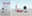
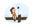

<link rel="import" href="../../bower_components/polymer/polymer.html">

<dom-module id="page-films">

  <template>

    <style is="custom-style" include="page-styles"></style>

    <a href="https://vimeo.com/77194357"><h1>ANIMATION DEMO REEL (2013)</h1></a>

    <a href="http://vimeo.com/12333586"><h2>BREATH (2010) - full length</h2></a>

    

    <h3>Official Screenings:</h3>

    <div class="screenings-list">
      <span>Columbus College of Art and Design Media Studies Screening, Ohio, USA (2010)</span>
      <span>Animation Block Party, New York, USA (2010)</span>
      <span>Anima Mundi Web &amp; Cell Contest, Brazil - <strong>Finalist</strong> (2010)</span>
      <span>New Filmmakers Los Angeles at Sunset Gower Studios, California, USA (2010)</span>
      <span>Atlantic City International Film and Music Festival, New Jersey, USA (2010)</span>
      <span>Columbus International Film + Video Festival, Ohio, USA - <strong>The Chris Statuette Award</strong> (2010)</span>
      <span>HelloFest, Jakarta, Indonesia - <strong>Winner-Best Animation</strong> (2010)</span>
      <span>Los Angeles International Children's Film Festival, California, USA (2010)</span>
      <span>Savannah International Animation Festival, Georgia, USA (2011)</span>
      <span>World of Women Film Festival, Sydney, NSW, Australia (2011)</span>
      <span>San Francisco Bay Area International Children’ Film Festival, California, USA (2011)</span>
      <span>Northwest Animation Festival, Oregon, USA (2011)</span>
      <span>Best of Fest Northwest Animation Festival, Oregon, USA (2011)</span>
      <span>AniFestROZAFA, Shkodër, Albania (2011)</span>
      <span>Surabaya AnimNation, Surabaya, Indonesia (2011)</span>
      <span>ASIAGRAPH 2011, Tokyo, Japan - <strong>Excellent Works</strong> Division II : "CG Animation Theater" (2011)</span>
      <span>Surabaya AnimNation Cergamboree, Surabaya, Indonesia (2012)</span>
      <span>Lahore International Children's Film Festival, Lahore, Pakistan (2012)</span>
      <span>Sharjah International Children's Film Festival, Sharjah, United Arab Emirates (2013)<br></span>
    </div>

    <a href="http://vimeo.com/40277194" target="_blank"><h2>THE BOX (2012) - full length</h2></a>

    <h3>Official Screenings:</h3>

    <div class="screenings-list">
      <span>University of California Los Angeles Animation Prom, California, USA (2012)</span>
      <span>San Diego International Children's Film Festival, California, USA (2012)</span>
      <span>New Orleans International Children's Film Festival, Louisiana, USA (2012)</span>
      <span style="font-family:Arial;" class="Apple-style-span">Lahore International Children's Film Festival, Lahore, Pakistan (2012)</span>
      <span>Los Angeles International Children's Film Festival, California, USA (2012)</span>
      <span>Los Angeles Indonesian Film Festival, California, USA (2014)<br></span>
    </div>

    <a href="http://vimeo.com/18414905" target="_blank"><h2>The FISH'S DREAM (2012) - full length</h2></a>

    

  </template>

  <script>

    Polymer({is: 'page-films'});

  </script>

</dom-module>
